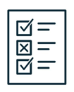
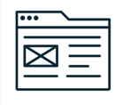
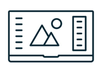
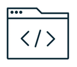

UX Reasearch
UX research is the foundation of my work as a UX designer, as it provides critical insights into users' behaviors, motivations, and pain points. Through methods such as user tests and interviews, I dive deep into understanding users' needs and preferences, allowing me to make informed design decisions. This research-driven approach ensures that every design choice is rooted in user data, leading to intuitive and impactful solutions that truly resonate with the target audience.

User Testing/Interviews
As a designer, I find conducting user tests and interviews to be a pivotal aspect of my work. It's a chance for me to directly connect with users, understand their perspectives, and gain invaluable insights that shape the design process, ensuring that the final product truly addresses their needs and delights them.
User Centered Problem Solving
By immersing myself in the users' world, empathizing with their challenges, and employing research methods like user tests and interviews, I can uncover their pain points, needs, and desires. This invaluable understanding fuels my design process, enabling me to create intuitive and delightful experiences that genuinely solve their problems and make a meaningful impact in their lives.

Wireframing and Prototyping
Wireframing and prototyping are indispensable tools in my arsenal, allowing me to bring ideas to life and iteratively refine them based on user feedback. Wireframing helps me craft the optimal user flow and information hierarchy, ensuring that the interface is intuitive and user-friendly. Through rapid prototyping, I can quickly visualize and test different design concepts, ensuring that the final product aligns seamlessly with user expectations and goals.

User Interface Design
UI design is the creative expression of my work as a UX designer, where I bring together aesthetics and functionality to craft visually appealing and user-friendly interfaces. Through careful consideration of color palettes, typography, and visual elements, I strive to create an engaging and cohesive user experience. By combining the principles of user-centered design with a keen eye for aesthetics, I aim to deliver interfaces that not only meet users' needs but also evoke positive emotions and leave a lasting impression.

Front-End Development
Front-end development is an integral part of my role as a UX designer, as it allows me to bring designs to life and ensure seamless user interactions. By collaborating closely with developers, I ensure that the visual and interactive elements of the interface are implemented accurately and effectively. This hands-on involvement enables me to bridge the gap between design and development, resulting in a cohesive and polished user experience that aligns with the intended design vision.